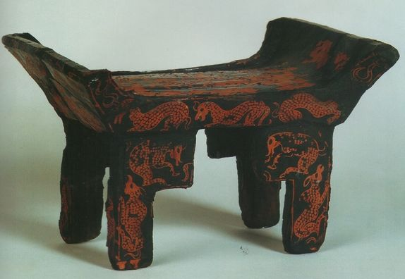

{kind=link}
あるいは、

{kind=link}
のような形をしている。「豆」は肉などを盛る木製の高坏で、

のような形をしている。併せて「俎豆」で祭礼の意味になる場合もある。
『晋書』は西暦六四八年に唐の太宗の命により、房玄齢・李延寿らによって編纂された。つまり『隋書』より後に書かれたのであり、『隋書』の記述を転用している箇所がある。また、明らかに『魏志倭人伝』や『後漢書』東夷傳の記事を引用した箇所もあり、風俗に関する記事部分は当てにならないと考えるべきである。
倭人在帶方東南大海中依山島爲國地多山林无良田食海物舊有百餘小國相接至魏時有三十國通好戸有七萬男子无大小悉黥面文身自謂太伯之後又言上古使詣中國皆自稱大夫昔夏少康之子封于會稽斷髮文身以避蛟龍之害今倭人好沉沒取魚亦文身以厭水禽計其道里當會稽東冶之東其男子衣以横幅但結束相連略无縫綴婦人衣如單被穿其中央以貫頭而皆被髮徒跣其地温暖俗種禾稻紵麻而蠶桑織績土无牛馬有刀楯弓箭以鐵爲鏃有屋宇父母兄弟臥息異處食飮用俎豆嫁娶不持錢帛以衣迎之死有棺无椁封土爲冢初喪哭泣不食肉已葬舉家入水澡浴自潔以除不祥其舉大事輙灼骨以占吉凶不知正歳四節但計秋收之時以爲年紀人多壽百年或八九十國多婦女不淫不妬无爭訟犯輕罪者没其妻孥重者族滅其家舊以男子爲主漢末倭人亂攻伐不定乃立女子爲王名曰卑彌呼宣帝之平公孫氏也其女王遣使至帶方朝見其後貢聘不絶及文帝作相又數至泰始初遣使重譯入貢
倭人は帶方東南の大海中に在り、山島に依りて國を爲す。地は山林多く良田无し。海物を食す[一]。舊は百餘小國有りて相接す。魏の時に至りて三十國有りて通好す[二]。戸七萬有り。男子大小と无く悉く黥面文身す。自ら太伯の後と謂ふ[三]。又、上古、使ひは中國へ詣ると皆大夫を自稱すと言ふ。昔、夏の少康の子、會稽に封じられ、斷髮文身を以て蛟龍の害を避けせしむ。今倭人好く沉沒し魚を取る。亦文身、以て水禽を厭はす。其の道里を計るに當に會稽東冶の東[四]。其の男子の衣は横幅を以て但結束し相連ねて略縫綴无し。婦人の衣は單被の如く其の中央を穿ちて以て頭を貫く。而して皆被髮徒跣[五]。其の地温暖。俗、禾稻、紵麻を種へ、而して蠶桑、織績す。土牛馬无し。刀、楯、弓箭有り。鐵を以て鏃と爲す。屋宇有りて父母兄弟、臥息する處を異にす。食飮に俎豆を用ゐる[六]。嫁娶するに錢帛を持たず衣を以て之を迎ふ[七]。死に棺有りて椁无し。土を封じ冢と爲なす。初め喪するや哭泣して肉を食はず。已に葬るや家を舉げて水に入り澡浴自潔し、以て不祥を除く[八]。其の大事を舉するに、輙ち骨を灼き以て吉凶を占ふ。正歳四節を知らず、但秋收の時を計り以て年紀と爲す[九]。人多く壽。百年或いは八、九十[十]。國、婦女多く淫ならず、妬せず[十一]。爭訟无し[十二]。輕き罪を犯す者は其の妻孥を没し、重き者は其の家を族滅す。舊は男子を以て主と爲す。漢末、倭人亂れ攻伐して定まらず。乃ち女子を立てて王と爲す。名を卑彌呼と曰ふ。宣帝の公孫氏を平ぐる也や、其の女王、使ひを遣はし、帶方に至り朝見す[十三]。其の後貢聘絶へず。文帝、相と作るに及び、又、數至る[十四]。泰始の初め、使ひを遣はし譯を重ねて入貢す[十五]。
倭人は帶方軍の東南にある大海の中にいて、山がちな地や島に住んで國を建てている。その土地は山林が多くて良い田がないので、海産物を食べている。古くは百余りの小国があって、それらが接しあっていた。魏の時代になって三十國となり、中国と通好していた。男性は身分が高い者も低い者も全員が顔や身体に入れ墨をする。自分たちを呉の太伯の後裔だと言っている。また、遙かな昔、夏王朝の時、少康王の王子が会稽に封じられ、髪を短く切って身体に入れ墨をすれば大魚水禽の害を避けられると住民に教え諭した。現在の倭の人々も上手に潜水して魚を捕る。やはり身体の入れ墨のおかげで水禽が寄ってこない。その道のりを計測すると、ちょうど会稽郡東冶県の東に当たる。その男性の衣服は横幅のある布を結んで連ねてほとんど縫っているところがない。女性の衣服は単衣に作って、真ん中に穴を開け、そこから頭を出して着る（所謂、貫頭衣）。そして、皆髪を結ばず冠もつけずにいて、裸足である。その地は温暖で、稲や苧麻（からむし）を植えて、桑を育て、養蚕をして絹織物を作る風がある。その地に牛や馬はいない。刀、楯、弓矢がある。鉄で鏃を作っている。立派な屋敷があって父母と兄弟は別々のところで寝る。飲食に俎豆を使う。嫁を取る場合に婚資は不要で、衣を用意して嫁を迎える。死者が出ると、棺おけには入れるが、椁（棺桶を納める箱のようなもの）を作らない。棺おけのまま土に埋めて冢を作る。初めは喪に服すると泣き叫び、肉を食べない。死者を葬った後に家族揃って水に入って身体を洗って水を浴びて穢れを取り除いて清め、禍を避ける。重要なことを行うにあたって、その度ごとに骨を焼いて吉凶を占う。正しい暦を知らず、ただ秋の取り入れの時期を見て一年が過ぎたとしている。人々の多くは長生きである。百歳あるいは八、九十歳まで生きる。国には女性が多く、浮気をしないし、嫉妬もしない。訴訟はない。罪を犯した者は、その罪が軽い場合はその妻子を没収して奴隷にし、罪が重い者は家族一門を連座して皆死刑とする。もともとは男性を主としていたが、後漢末に内乱が起き、倭人は互いに討伐しあって国が定まらなかった。そこで女性を立てて王とした。名を卑彌呼という。宣帝（司馬懿、つまり司馬仲達のこと）が公孫氏を討ち取ったら、その女王が帯方郡に使者を派遣して朝見に至った。その後も朝貢が絶えなかった。文帝（司馬昭のこと）が相国に就任すると（西暦二六四年）、またしばしば朝貢にやってきた。泰始（西暦二六五年〜西暦二七四年）の初めごろ、使者をよこして通訳を間に挟んで入貢してきた。